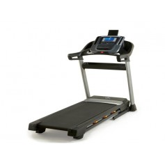

Welcome to Bėgimo takelis
Bėgimo takeliai | inSPORTline.lt
2020.10.30 05:11Apie inSPORTline™ Parduotuvė Vilniuje Parduotuvė Kaune Kontaktai 30 dienų grąžinimo garantija Nemokamas pristatymas nuo 100€ Lietuvių Lietuvių English Prisijungti 0 Krepšelis / Empty Pirkinių krepšelis × Jūsų krepšelyje nėra prekių Sporto inventorius Kovinis sportas Bokso ir MMA pirštinės Bokso kriaušės ir maišai Karatė ir dziudo kimono Kūno ir dantų apsaugos Makivaros ir letenos Stalo tenisas Stalo teniso stalai Stalo teniso raketės Stalo teniso tinkleliai Stalo teniso kamuoliukai Krepšinis Krepšinio kamuoliai Krepšinio lentos ir lankai Krepšinio stovai Futbolas Futbolo kamuoliai Mobilūs futbolo vartai Futbolo apsaugos ir aksesuarai Badmintonas Badmintono raketės Badmintono rinkiniai Badmintono plunksnelės Badmintono tinklai Kitos sporto šakos Rankinio kamuoliai Tinklinio kamuoliai Lauko tenisas Skvošas Matavimo prietaisai Laikrodžiai ir pulsometrai Chronometrai ir laikmačiai Žingsniamačiai ir pedometrai Teisėjų švilpukai Pirštinės ir diržai Treniruočių pirštinės Dirželiai ir kabliai Svorių kilnojimo diržai Kilimėliai ir čiužiniai Treniruočių kilimėliai Čiužiniai sportui Sportinės dangos Kamuoliai ir maišai Gimnastikos kamuoliai Pasunkinti kamuoliai Jėgos maišai Svoriai treniruotėms Dėvimi svoriai ir liemenės Hanteliai ir komplektai Giros ir vėzdai-kūjai Grifai ir svoriai Grifai ir štangų komplektai Štangos svoriai 25/30/50 Traukimo rankenos Suoleliai ir stovai Multifunkciniai suoliukai Treniruočių suoliukai Štangų ir pritupimų stovai Švediškos sienelės Švediškos sieneles Švediškos sienelės priedai Vaikiškos švediškos sienelės Skersiniai ir lygiagretės Prisitraukimų skersiniai Lygiagretės Skersiniai + lygiagretės Pasipriešinimo gumos Elastinės gumos fiksuoto ilgio Elastinės juostos-kilpos Espanderiai ir tampyklės Matuojamos gumos Treniruočių virvės Kovos virvės X-FIT Kopimo virvės Pasipriešinimo virvės Atletinė įranga Treniruočių žymekliai Barjerai ir kopetėlės Šuolių platformos Aerobikos įranga Aerobikos stepai Fitneso batutai Lankai sukimui Šokdynės Jogos rinkiniai Gimnastikos žiedai Pilvo preso treniruokliai Atsispaudimų rankenos Funkcinių diržų treniruokliai Kardio ir jėgos treniruokliai Bėgimo takeliai Elipsiniai treniruokliai Dviračiai treniruokliai Spiningo dviračiai Irklavimo treniruokliai Vibro treniruokliai Steperiai Slidinėjimo treniruokliai Multifunkciniai treniruokliai Jėgos treniruokliai Reabilitacijai ir masažui Masažuokliai ir šildytuvai Masažo stalai ir priedai Masažinės kėdės Inversiniai stalai Švediškos sienelės Reabilitaciniai treniruokliai Masažiniai volai ir lazdelės Pasunkinti kamuoliai Gimnastikos kamuoliai Pasipriešinimo gumos Balanso treniruokliai Tvarsčiai ir įtvarai Aktyviam laisvalaikiui Žaidimų stalai Multifunkciniai žaidimų stalai Stalo futbolo stalai Oro ritulio stalai Batutai Batutai su apsauginiu tinklu Batutai ir fitneso batutai Batutų aksesuarai ir priedai Batutų dalys ir aksesuarai Batuto spyruoklės Batuto spyruoklių apsaugos Batutų apsauginiai tinklai Atsarginiai pagrindai Paspirtukai Elektriniai paspirtukai Vaikiški paspirtukai Paspirtukai jaunimui Triukiniai paspirtukai Miesto paspirtukai Paspirtukai suaugusiems Dviračių ir riedučių apsaugos Riedučiai ir pačiūžos Riedučiai vaikams ir suaugusiems Riedučių komplektai vaikams Reguliuojamo dydžio riedučiai Fiksuoto dydžio riedučiai Pačiūžos vaikams ir suaugusiems Riedučiai-pačiūžos 2in1 Riedlentės ir kruizeriai Elektrinės riedlentės ir riedžiai Riedžiai Elektrinės riedlentės Riedlentės ir longboardai Mini riedlentės / Penny board ai Balansinės riedlentės Dviračiai Elektriniai dviračiai Balansiniai dviratukai ir triratukai Vaikiški dviratukai ir triratukai Dviračiai jaunimui ir suaugusiems Stovyklavimas ir turizmas Kuprinės ir krepšiai Čiužiniai ir hamakai Stovyklavimo aksesuarai Miegmaišiai Šiaurietiškas ėjimas Šiaurietiško ėjimo lazdos Žingsniamačiai ir pedometrai Lazdų antgaliai ir aksesuarai Batų apkaustai Vaikų kampelis Vaikiškos švediškos sienelės Vaikiškos sūpynės ir nameliai Aktyvaus laisvalaikio žaislai Mašinėlės Go-Kartai Berg Vaikiškos mašinėlės Berg Go-Kartai jaunimui ir suaugusiems Hibridiniai velokartai Berg Vandens pramogos Irklentės Jobe (SUP) Vandens atrakcionai Vandens slidės Jobe Vandenlentės Jobe Vandens sporto apsaugos Nardymo akiniai ir kaukės Gelbėjimosi liemenės Vandens batai Smiginio lentos ir pokeris Smiginio taikiniai Smiginio strėlytės Pokerio rinkiniai ir žetonai 8-671-24005 8-683-10733 Sporto ir laisvalaikio prekių parduotuvė Vilniuje Sporto ir laisvalaikio prekių parduotuvė Kaune Sporto inventorius Kovinis sportas Stalo tenisas Krepšinis Futbolas Badmintonas Kitos sporto šakos Matavimo prietaisai Pirštinės ir diržai Kilimėliai ir čiužiniai Kamuoliai ir maišai Svoriai treniruotėms Grifai ir svoriai Suoleliai ir stovai Švediškos sienelės Skersiniai ir lygiagretės Pasipriešinimo gumos Treniruočių virvės Atletinė įranga Aerobikos įranga Pilvo preso treniruokliai Atsispaudimų rankenos Šokdynės Jogos rinkiniai Funkcinių diržų treniruokliai Gimnastikos žiedai Treniruočių pirštinės Kardio treniruokliai Bėgimo takeliai Elipsiniai treniruokliai Dviračiai treniruokliai Spiningo dviračiai Irklavimo treniruokliai Vibro treniruokliai Steperiai Slidinėjimo treniruokliai Multifunkciniai treniruokliai Jėgos treniruokliai Priedai prie treniruoklių Reabilitacijai ir masažui Masažuokliai ir šildytuvai Masažinės kėdės Masažo stalai ir priedai Inversiniai stalai Švediškos sienelės Reabilitaciniai treniruokliai Masažiniai volai ir lazdelės Pasunkinti kamuoliai Gimnastikos kamuoliai Pasipriešinimo gumos Balanso treniruokliai Tvarsčiai ir įtvarai Aktyvus laisvalaikis Žaidimų stalai Batutai Paspirtukai Riedučiai ir pačiūžos Riedlentės ir kruizeriai Dviračiai Stovyklavimas ir turizmas Šiaurietiškas ėjimas Vaikų kampelis Mašinėlės Go-Kartai Berg Vandens pramogos Smiginio lentos ir pokeris inSPORTline.lt kontaktai Menu Paieška Prisijungti 0 Krepšelis Pagrindinis Kardio treniruokliai Bėgimo takeliai
Bėgimo takeliai
Bėgimo takelis yra nepakeičiamas kiekvieno sporto klubo atributas, taip pat dažnai sutinkamas dažno bėgiko namuose. Treniruotės su bėgimo takeliu lavina širdies ir kraujagyslių sistemą, padeda atsikratyti nereikalingo svorio. Mūsų bėgimo takeliai tinka tiek patyrusiems, tiek pradedantiesiems bėgikams. Geriausi mūsų siūlomi bėgimo takeliai turi efektyvius motorus, gerą amortizaciją, matuoja jūsų širdies ritmą, turi daug modernių funkcijų.
Motorizuoti takeliai išsiskiria švelniu ir tiksliu greičio ir įkalnės reguliavimu. Kompiuteris rodo visus svarbiausius treniruotės aspektus: greitį, bėgimo laiką, distanciją, širdies ritmą ir sudegintas kalorijas.
Inovatyvioji inSPORTline inCondi serija siūlo sujungti treniruoklį su planšete ar telefonu ir stebėti besikeičiančius pasaulio vaizdus, kai bėgate (Google maps trasų funkcija).
Reikia pagalbos?
Kodėl bėgimo takelis?
Kaip treniruotis su bėgimo takeliu ?
4 būdai numesti svorio treniruojantis su bėgimo takeliu?
Rodoma 1-35 iš 35 prekės(-ių) Kaina, mažiausia - didžiausia Aktualumas Pavadinimas, A - Z Pavadinimas, Z - A Kaina, mažiausia - didžiausia Kaina, didžiausia - mažiausia 38 12 24 36 Show all Pristatysime nemokamai! Turime parduotuvėje Vilniuje Turime Bėgimo takeliai
Mechaninis ėjimo / bėgimo takelis inSPORTline Sprynkl
inSPORTline 166741 239,89 € 315,99 € Mechaninis bėgimo takelis su daug funkcijų, maksimali apkrova 100kg, LCD ekranas, 8 pasipriešinimo lygiai. Pristatymas: 1 - 2 darbo dienos 0 -1 1 Pristatysime nemokamai! Bėgimo takeliaiMechaninis ėjimo / bėgimo takelis inSPORTline Excel Run
inSPORTline 162359 259,89 € 354,99 € Dažniausiai bėgimo takeliai skirti tik bėgimo ir ėjimo treniruotėms, tačiau dabar galima pasiūlyti ir papildomą Šiaurietišką ėjimą , kuris atliekamas dviejų specialiai sukurtų svertų pagalba. Prieinama nuo: 2020-11-06 0 0 0 Apie prekę Pristatysime nemokamai! Turime parduotuvėje Vilniuje Turime Bėgimo takeliaiBėgimo takelis reabilitacijai inSPORTline Neblin (greitis: 0,3–6 km/h)
inSPORTline 166729 559,89 € 617,99 € Bėgimo takeliai inSPORTline Neblin yra specialiai namų naudojimui skirti vaikščiojimo ir reabilitacijai tinkami takeliai. Bėgimo takelio minimalus greitis yra 0,3 km/val. Papildomas turėklas rankoms. Pristatymas: 1 - 2 darbo dienos 2 0 7 Pristatysime nemokamai! Turime parduotuvėje Vilniuje Turime parduotuvėje Kaune Turime Bėgimo takeliaiBėgimo takelis Reebok Astroride A2.0 (iki 120kg, 1.5AG)
Reebok 194797 599,89 € 684,99 € Pristatymas: 1 - 2 darbo dienos 7 1 4 Pristatysime nemokamai! Bėgimo takeliaiBėgimo takelis Reebok Astroride A4.0 (iki 130kg, 2AG)
Reebok 194798 719,89 € 812,99 € Prekės laikinai neturime 0 0 0 Apie prekę Pristatysime nemokamai! Turime parduotuvėje Vilniuje Turime parduotuvėje Kaune Turime Bėgimo takeliaiBėgimo takelis inSPORTline Akamar (iki 100kg, 1.5AG)
inSPORTline 167205 739,89 € 806,99 € Tvirtas bėgimo takelis su elektroninių įkalnės reguliavimo, taupantis erdvę, tylaus veikimo, turintis gerą amortizaciją, stilingo dizaino. Pristatymas: 1 - 2 darbo dienos 2 1 18 Pristatysime nemokamai! Turime parduotuvėje Vilniuje Turime Bėgimo takeliaiMechaninis bėgimo takelis + multifunkcinis treniruoklis inSPORTline Tongu
inSPORTline 256641 769,89 € 864,99 € Pristatymas: 1 - 2 darbo dienos 2 0 1 Pristatysime nemokamai! Turime parduotuvėje Vilniuje Turime Bėgimo takeliaiKompaktiškas bėgimo takelis Reebok i-Run 4.0 (iki 120kg, 1.25AG)
Reebok 194799 799,89 € 867,99 € Pristatymas: 1 - 2 darbo dienos 1 0 0 Pristatysime nemokamai! Turime parduotuvėje Vilniuje Turime Bėgimo takeliaiBėgimo takelis inSPORTline inCondi T30i (iki 120kg, 2AG)
inSPORTline 313778 819,89 € 950,99 € Pristatymas: 1 - 2 darbo dienos 2 0 3 Pristatysime nemokamai! Turime parduotuvėje Vilniuje Turime Bėgimo takeliaiBėgimo / ėjimo mechaninis takelis inSPORTline Hill Pro (įkalnė iki 13°/23,09%, iki 180kg)
inSPORTline 203901 869,89 € 1 037,99 € Pristatymas: 1 - 2 darbo dienos 1 0 0 Pristatysime nemokamai! Turime parduotuvėje Vilniuje Turime Bėgimo takeliaiBėgimo takelis inSPORTline inCondi T45i (iki 120kg, 2AG)
inSPORTline 312614 999,89 € 1 123,99 € Pristatymas: 1 - 2 darbo dienos 2 0 0 Pristatysime nemokamai! Turime parduotuvėje Vilniuje Turime Bėgimo takeliaiBėgimo takelis Reebok Jet 100 White + Bluetooth (iki 110kg, 2AG)
Reebok 189344 999,89 € 1 099,99 € Pristatymas: 1 - 2 darbo dienos 3 0 15 Pristatysime nemokamai! Nemokamai pristatysime ir užnešime! Turime parduotuvėje Kaune Turime Bėgimo takeliaiBėgimo takelis inSPORTline inCondi T50i (iki 140kg, 2.5AG)
inSPORTline 166739 1 079,89 € 1 249,99 € Gali būti prijungtas prie planšetės ar telefono. Turi didelio dydžio taką, sulankstomas, komfortabili suspensija, modernus dizainas, elektroninis įkalnės nustatymas, tylus veikimas. Pristatymas: 1 - 2 darbo dienos -1 0 0 Pristatysime nemokamai! Nemokamai pristatysime ir užnešime! Turime parduotuvėje Vilniuje Turime parduotuvėje Kaune Turime Bėgimo takeliaiBėgimo takelis Reebok Jet 300 + Bluetooth (iki 140kg, 2,5AG)
Reebok 189347 1 199,89 € 1 249,99 € Pristatymas: 1 - 2 darbo dienos 1 0 11 Pristatysime nemokamai! Nemokamai pristatysime ir užnešime! Turime parduotuvėje Vilniuje Turime Bėgimo takeliaiModernus bėgimo takelis inSPORTline inCondi T70i II (iki 125kg, 3AG)
inSPORTline 188158 1 249,89 € 1 417,99 € Wi-Fi prijungimas, vidinis duomenų saugojimas, galima prijungti prie planšetės, didelė bėgimo sritis, pristabdymo funkcija, tvirta konstrukcija, lengvai perskaitomas ekranas, galima paleisti vaizdo įrašus iš USB, elektroninė įkalnė, anti-shock, patrauklus dizainas. Pristatymas: 1 - 2 darbo dienos 2 0 8 Pristatysime nemokamai! Nemokamai pristatysime ir užnešime! Turime parduotuvėje Vilniuje Turime parduotuvėje Kaune Turime Bėgimo takeliaiBėgimo takelis inSPORTline Gilavar (iki 150kg, 3.50AG)
inSPORTline 162360 1 299,89 € 1 815,99 € Kobybiškas treniruoklis skirtas namų ar klubo naudojimui, maksimalus greitis 22km/h. Turi galingą variklį, HP LCD ekraną ir 99 iš anksto nustatytų programų.Kompiuteris siūlo iš anksto nustatytų programų įvairovę, HRC programą, vartotojo programą, rodo reikiamą informaciją, pavyzdžiui, greitį, praėjusį atstumą, laiką, širdies ritmą, sudegintų kalorijų kiekį. Pristatymas: 1 - 2 darbo dienos 1 1 2 Pristatysime nemokamai! Nemokamai pristatysime ir užnešime! Turime parduotuvėje Kaune Turime Bėgimo takeliaiBėgimo takelis inSPORTline inCondi T400i (iki 180kg, 3.5AG)
inSPORTline 162358 1 399,89 € 1 914,99 € Bėgimo takelis inSPORTline inCondi T400i- tai kokybiškas takelis naudojimui namuose. Jame pritaikyta moderni įranga ir galingas, 3.5 AG variklis. Ilgas ir platus bėgimo takelis užtikrins komfortą per treniruotes. Kompiuteris su daugybe pasirenkamų programų, taip pat rodo pačius reikalingiausius parametrus, kaip, greitis, atstumas, laikas, širdies ritmas,... Pristatymas: 1 - 2 darbo dienos 0 1 0 Pristatysime nemokamai! Nemokamai pristatysime ir užnešime! Turime Bėgimo takeliaiBėgimo / ėjimo takelis inSPORTline AeroHike (įkalnė iki 17.5°/31%, 2.7AG)
inSPORTline 195804 1 819,89 € 2 074,99 € Pristatysime iki: 2020-11-13 0 0 0 Pristatysime nemokamai! Nemokamai pristatysime ir užnešime! Bėgimo takeliaiBėgimo takelis inSPORTline Gardian G6 PRO (iki 140kg, 4AG)
inSPORTline 169373 1 879,89 € 2 170,99 € Tvirtas bėgimo takelis su patikimu varikliu, dideliu bėgimo plotu ir įvairiomis programomis, elegantiškas dizainas. Prieinama nuo: 2020-11-29 0 0 0 Apie prekę Pristatysime nemokamai! Nemokamai pristatysime ir užnešime! Turime Bėgimo takeliaiProfesionalus bėgimo takelis inSPORTline inCondi T6000i (iki 160kg, 4AG)
inSPORTline 166742 2 569,89 € 2 879,99 € Gali būti susietas su mobiliąja programėle. Turi didelį taką, pauzės funkciją, kokybišką amortizaciją, 30 treniruočių programų, didelę maksimalią apkrovą, patikimą rėmą. Pristatysime iki: 2020-11-13 0 0 0 Pristatysime nemokamai! Nemokamai pristatysime ir užnešime! Turime Bėgimo takeliaiProfesionalus bėgimo takelis inSPORTline Gardian G8 (iki 180kg, 6AG)
inSPORTline 167716 3 459,89 € 3 834,99 € Skirtas komerciniam naudojimui, bėgimo takelis inSPORTline Guardian G8 yra profesionalus įrenginys su elegantišku dizainu. Jo tvirtas rėmas, 6 AG motoras, 180kg svorio limitas ir bendras 166kg treniruoklio svoris užtikrina ilgaamžiškumą ir patogų naudojimą. Pristatysime iki: 2020-11-13 0 0 0 Pristatysime nemokamai! Nemokamai pristatysime ir užnešime! Turime Bėgimo takeliaiProfesionalus bėgimo / ėjimo mechaninis takelis inSPORTline Air-Run (iki 180kg)
inSPORTline 195800 4 539,89 € 5 836,99 € Pristatysime iki: 2020-11-13 0 0 0 Bėgimo takeliaiSilikoninis tepalas bėgimo takelio profilaktikai inSPORTline 200ml
inSPORTline 185641 14,89 € 19,99 € Tinkama bėgimo takelių lubrikacijai. Prieinama nuo: 2020-11-15 0 0 0 Apie prekę Pristatysime nemokamai! Bėgimo takeliaiMechaninis ėjimo / bėgimo takelis inSPORTline Excel Run
inSPORTline 162359 259,89 € 354,99 € Dažniausiai bėgimo takeliai skirti tik bėgimo ir ėjimo treniruotėms, tačiau dabar galima pasiūlyti ir papildomą Šiaurietišką ėjimą , kuris atliekamas dviejų specialiai sukurtų svertų pagalba. Prieinama nuo: 2020-11-06 0 0 0 Apie prekę Pristatysime nemokamai! Bėgimo takeliaiBėgimo takelis inSPORTline Lavister (iki 120kg, 1.5AG)
inSPORTline 166740 549,89 € 661,99 € Puikus modelis greitam ėjimui, sulankstomas, turi pauzės funkciją, 12 programų, transportavimo ratukus, kokybišką amortizaciją, modernų dizainą. Prieinama nuo: 2020-12-12 0 0 0 Apie prekę Pristatysime nemokamai! Bėgimo takeliaiBėgimo takelis Reebok Astroride A4.0 (iki 130kg, 2AG)
Reebok 194798 719,89 € 812,99 € Prekės laikinai neturime 0 0 0 Apie prekę Pristatysime nemokamai! Bėgimo takeliaiBėgimo takelis Reebok Jet 100+
Reebok 258513 798,90 € 999,00 € Prekės laikinai neturime 0 0 0 Apie prekę Pristatysime nemokamai! Bėgimo takeliaiBėgimo takelis Reebok Jet 100+ Bluetooth Grey
Reebok 189348 998,90 € 1 072,99 € Prekės laikinai neturime 0 0 0 Apie prekę Pristatysime nemokamai! Bėgimo takeliaiModernus kompaktiškas bėgimo takelis inSPORTline inCondi T40i (iki 120kg, 2AG)
inSPORTline 169351 849,89 € 1 152,99 € Takelis inSPORTline inCondi T40i gali būti prijungtas prie išmaniųjų fitneso programėlių, lengvai sulankstomas, kad sutaupyti erdvės, komfortabili amortizacijos sistema, stilingas dizainas, elektroninė įkalnė, tylus veikimas. Prekės laikinai neturime 0 0 0 Apie prekę Pristatysime nemokamai! Bėgimo takeliaiBėgimo takelis inSPORTline inCondi T60i
inSPORTline 162361 999,89 € 1 271,99 € Bėgimo takelis inSPORTline inCondi T60i- tai kokybiškas takelis naudojimui namuose. Jame pritaikyta moderni įranga ir galingas, 2.5 AG variklis. Ilgas ir platus bėgimo takelis užtikrins komfortą per treniruotes. Prekės laikinai neturime 0 0 0 Apie prekę Pristatysime nemokamai! Nemokamai pristatysime ir užnešime! Bėgimo takeliaiBėgimo takelis Reebok JET 200+ Bluetooth
Reebok 253948 1 049,89 € 1 272,99 € Prekės laikinai neturime 0 0 0 Apie prekę Pristatysime nemokamai! Nemokamai pristatysime ir užnešime! Bėgimo takeliaiBėgimo takelis Reebok Jet 300+ Bluetooth
Reebok 258856 1 299,89 € 1 412,99 € Prekės laikinai neturime 0 0 0 Apie prekę Pristatysime nemokamai! Nemokamai pristatysime ir užnešime! Bėgimo takeliaiBėgimo takelis Reebok SL8.0 Treadmill (iki 150kg, 3AG)
Reebok 189345 1 399,89 € 1 599,99 € Prekės laikinai neturime 0 0 0 Apie prekę Pristatysime nemokamai! Nemokamai pristatysime ir užnešime! Bėgimo takeliaiBėgimo takelis inSPORTline Gardian G6 PRO (iki 140kg, 4AG)
inSPORTline 169373 1 879,89 € 2 170,99 € Tvirtas bėgimo takelis su patikimu varikliu, dideliu bėgimo plotu ir įvairiomis programomis, elegantiškas dizainas. Prieinama nuo: 2020-11-29 0 0 0 Apie prekę Pristatysime nemokamai! Nemokamai pristatysime ir užnešime! Bėgimo takeliaiBėgimo takelis inSPORTline Mystral PRO (iki 150kg, 3AG)
inSPORTline 177728 1 629,89 € 2 221,99 € Bėgimo takelis inSPORTline Mystral skirtas sportos klubams ir namų naudojimui. Pasižymi funkcijų įvairove ir saugia įranga, įskaitant ir galingą 3.5 AG variklį. Tvirta kontrukcija ir didelis bėgimo takelis leidžia atlaikyti iki 130 kg apkrovą, užtikrina maksimalų komforto jausmą fizinio krūvio metu. Prieinama nuo: 2021-01-04 0 0 0 Apie prekę Pristatysime nemokamai! Nemokamai pristatysime ir užnešime! Bėgimo takeliaiProfesionalus bėgimo / ėjimo mechaninis takelis inSPORTline Air-Run T300 (iki 200kg)
inSPORTline 204033 2 319,89 € 2 593,99 € Prekės laikinai neturime 0 0 0 Apie prekę Pristatysime nemokamai! Nemokamai pristatysime ir užnešime! Bėgimo takeliaiProfesionalus bėgimo takelis inSPORTline Gardian G12 (iki 200kg, 8AG)
inSPORTline 167717 5 629,89 € 6 571,99 € Skirtas komerciniam naudojimui, bėgimo takelis inSPORTline Guardian G12 yra profesionalus įrenginys su elegantišku dizainu. Jo tvirtas rėmas, 8 AG motoras, 200kg svorio limitas ir bendras 265kg treniruoklio svoris užtikrina ilgaamžiškumą ir patogų naudojimą. Prieinama nuo: 2020-11-13 0 0 0 Apie prekę Pristatysime nemokamai! Nemokamai pristatysime ir užnešime! Bėgimo takeliaiProfesionalus bėgimo takelis inSPORTline Gardian G12TF (iki 200kg, 8AG)
inSPORTline 245788 6 799,89 € 7 781,99 € Prieinama nuo: 2020-11-13 0 0 0 Apie prekę Prekių filtras Pašalinti filtrusKardio treniruokliai
Bėgimo takeliai Elipsiniai treniruokliai Dviračiai treniruokliai Spiningo dviračiai Irklavimo treniruokliai Vibro treniruokliai Steperiai Slidinėjimo treniruokliai Multifunkciniai treniruokliai Jėgos treniruokliai Priedai prie treniruokliųInformacija klientams
Apie inSPORTline™ Parduotuvė Vilniuje Parduotuvė Kaune Mūsų klientai Apmokėjimas ir pristatymas Grąžinimo garantija Garantinis aptarnavimas inSPORTline.lt kontaktaiPatarimai
Kodėl verta rinktis elipsinį treniruoklį?
Svarstote, kodėl verta rinktis elipsinį treniruoklį? Pirma priežastis – treniravimasis elipsiniu treniruokliu yra...
Kodėl bėgimo takelis?
Bėgiojimas – natūralus veiksmas, kuris tapo populiariu laisvalaikio leidimo būdu. Dėka padidėjusio bėgiojimo...
Kaip treniruotis su bėgimo takeliu?
Svarstote, ar teisingai atliekate bėgimo treniruotės? Tuomet šis straipsnis kaip tik jums!
Mus verta rinktis nes:
GREITAS PRISTATYMAS
Didžiąją dalį prekių sandėliuojame, todėl dažniausiai jas gausite jau kitą darbo dieną po pirkimo.
PATOGUS APMOKĖJIMAS
Už prekes galite apmokėti bankiniu pavedimu, grynaisiais kurjeriui ar pašto skyriuje bei lizingu.
TECHNINIS APTARNAVIMAS
Visai parduodamai įrangai suteikiame garantijas bei atliekame techninę priežiūrą, montuojame įrangą bei konsultuojame jos eksploatavimo klausimais.
Prekių katalogas
Sporto inventorius Kardio treniruokliai Reabilitacijai ir masažui Aktyvus laisvalaikis Atsarginės dalysInformacija
Apie inSPORTline™ Parduotuvė Vilniuje Parduotuvė Kaune Mūsų klientai Didmeninė prekyba inSPORTline.lt kontaktaiInformacija klientams
Prisijungimas Užsakymų istorija Apmokėjimas ir pristatymas Grąžinimo garantija Garantinis aptarnavimas Pirkimo taisyklės Privatumo politikaMūsų parduotuvės
Vilnius, Laisvės pr. 125
+370 671 24005
Kaunas, Ateities pl. 23b
+370 602 20866
Rīga, Bukultu 11
+371 27 118655
Tallinn, Tedre tn 55
+372 63 000 77
Mūsų rekvizitai
UAB Metausta Į.k.: 303100222 PVM: LT100008142113 Ateities pl. 23b, Kaunas +370 671 24005 info@insportline.ltBankas: AB „SEB bankas", 70440
Sąskaita: LT287044060007908780
UAB "Metausta" oficialus Insportline™ atstovas Baltijos šalyse.
